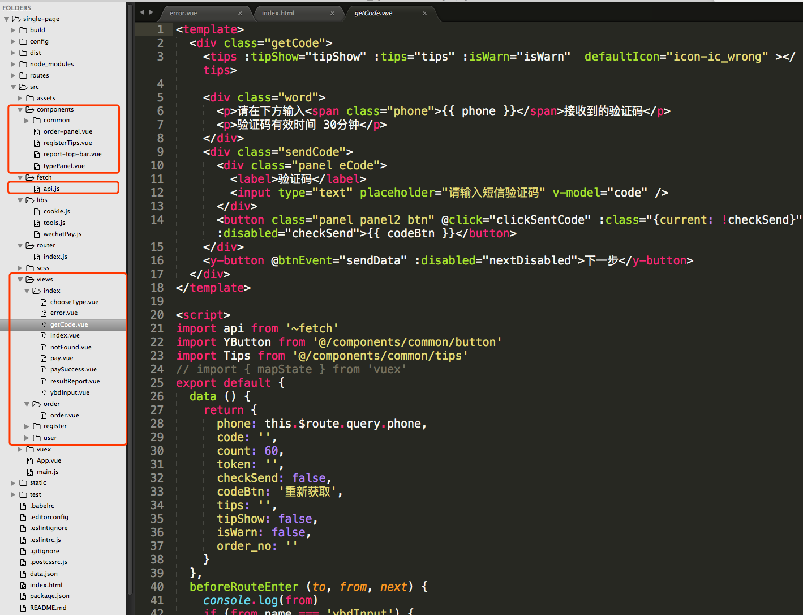

转正汇报
by lilicai
试用期工作内容
顺利完成一个简单的前端多页脚手架
顺利完成易背调的微信端上线
陆续上线了 易背调补丁版本
易背调1.0.1版本
易背调1.0.2版本
项目相关内容
项目目录结构演示
Vue & angular
Vue & react

Vue & Angular
API复杂性
指令和组件
性能方面
数据绑定
Vue & React
使用Virtual DOM
提供了响应式（Reactive）和组件化（Componsable）的视图组件
将注意力集中保持在核心库，伴随于此，有配套的路由和负责处理全局状态管理的库
渲染方式
性能方面
Q & A ----- 问答环节
Thanks